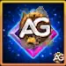

Top 7 Heróis de Cada Facção em Hero Wars Alliance 2025
Top 7 Heróis de Cada Facção em Hero Wars Alliance 2025
") 7 Guerreiros Essenciais em Hero Wars Alliance para 2025 (Meta Revelada)
7 Guerreiros Essenciais em Hero Wars Alliance para 2025 (Meta Revelada)
As Relíquias são um dos recursos mais empolgantes introduzidos em Hero Wars Alliance. Elas não apenas concedem novos poderes aos seus heróis, mas também transformam a forma como você vivencia as batalhas.
Se você já se perguntou como desbloqueá-las, como funcionam e por que são tão importantes para montar equipes mais fortes, este guia detalhado irá lhe mostrar tudo o que precisa saber.
Em sua essência, as Relíquias fortalecem os heróis ao conceder novas habilidades e ao mesmo tempo aprimorar as já existentes. Além das melhorias nas habilidades, as Relíquias também aumentam dois atributos secundários de cada herói. Os atributos fortalecidos dependem de como as habilidades específicas daquele herói escalam:
Você terá acesso à tela de Relíquias logo no início do jogo, no nível de equipe 15, mas não espere desbloqueá-las imediatamente. Elas só se tornam disponíveis quando seu herói atinge o nível 50 e possui pelo menos quatro estrelas de evolução.
Atualmente, apenas Somna e Arachne têm acesso às Relíquias, embora mais heróis recebam esse recurso em futuras atualizações. Fique sempre de olho nas notícias e eventos oficiais, pois as Relíquias estão se consolidando como um dos pilares da progressão no fim do jogo.
| Nível | Custo | Atributo | Valor | Vida |
|---|---|---|---|---|
| 1 | 50 | magicAttack | 5645 | 28794 |
| 2 | 20 | magicAttack | 282 | 1440 |
| 3 | 20 | magicAttack | 282 | 1440 |
| 4 | 20 | magicAttack | 423 | 2160 |
| 5 | 40 | magicAttack | 423 | 2160 |
| 6 | 40 | magicAttack | 564 | 2879 |
| 7 | 40 | magicAttack | 564 | 2879 |
| 8 | 40 | magicAttack | 564 | 2879 |
| 9 | 40 | magicAttack | 1129 | 5759 |
| 10 | 40 | magicAttack | 1129 | 5759 |
| 11 | 60 | magicAttack | 1411 | 7199 |
| 12 | 60 | magicAttack | 1411 | 7199 |
| 13 | 60 | magicAttack | 1411 | 7199 |
| 14 | 60 | magicAttack | 1411 | 7199 |
| 15 | 60 | magicAttack | 1411 | 7199 |
| 16 | 100 | magicAttack | 2258 | 11518 |
| 17 | 100 | magicAttack | 2258 | 11518 |
| 18 | 100 | magicAttack | 2258 | 11518 |
| 19 | 100 | magicAttack | 2258 | 11518 |
| 20 | 100 | magicAttack | 2258 | 11518 |
| 21 | 150 | magicAttack | 2822 | 14397 |
| 22 | 150 | magicAttack | 2822 | 14397 |
| 23 | 150 | magicAttack | 2822 | 14397 |
| 24 | 150 | magicAttack | 2822 | 14397 |
| 25 | 150 | magicAttack | 2822 | 14397 |
| 26 | 200 | magicAttack | 2822 | 14397 |
| 27 | 200 | magicAttack | 2822 | 14397 |
| 28 | 200 | magicAttack | 2822 | 14397 |
| 29 | 200 | magicAttack | 2822 | 14397 |
| 30 | 200 | magicAttack | 2822 | 14397 |
| Total | 2880 | 57005 | 290824 |
| Nível | Custo | Atributo | Valor | Vida |
|---|---|---|---|---|
| 1 | 50 | physicalAttack | 3760 | 28794 |
| 2 | 20 | physicalAttack | 188 | 1440 |
| 3 | 20 | physicalAttack | 188 | 1440 |
| 4 | 20 | physicalAttack | 282 | 2160 |
| 5 | 40 | physicalAttack | 282 | 2160 |
| 6 | 40 | physicalAttack | 376 | 2879 |
| 7 | 40 | physicalAttack | 376 | 2879 |
| 8 | 40 | physicalAttack | 376 | 2879 |
| 9 | 40 | physicalAttack | 752 | 5759 |
| 10 | 40 | physicalAttack | 752 | 5759 |
| 11 | 60 | physicalAttack | 940 | 7199 |
| 12 | 60 | physicalAttack | 940 | 7199 |
| 13 | 60 | physicalAttack | 940 | 7199 |
| 14 | 60 | physicalAttack | 940 | 7199 |
| 15 | 60 | physicalAttack | 940 | 7199 |
| 16 | 100 | physicalAttack | 1504 | 11518 |
| 17 | 100 | physicalAttack | 1504 | 11518 |
| 18 | 100 | physicalAttack | 1504 | 11518 |
| 19 | 100 | physicalAttack | 1504 | 11518 |
| 20 | 100 | physicalAttack | 1504 | 11518 |
| 21 | 150 | physicalAttack | 1880 | 14397 |
| 22 | 150 | physicalAttack | 1880 | 14397 |
| 23 | 150 | physicalAttack | 1880 | 14397 |
| 24 | 150 | physicalAttack | 1880 | 14397 |
| 25 | 150 | physicalAttack | 1880 | 14397 |
| 26 | 200 | physicalAttack | 1880 | 14397 |
| 27 | 200 | physicalAttack | 1880 | 14397 |
| 28 | 200 | physicalAttack | 1880 | 14397 |
| 29 | 200 | physicalAttack | 1880 | 14397 |
| 30 | 200 | physicalAttack | 1880 | 14397 |
| Total | 2880 | 37776 | 290824 |
Talvez o aspecto mais empolgante das Relíquias seja a introdução das Habilidades Exclusivas. Essas habilidades aprimoram drasticamente sua jogabilidade e podem ser o fator decisivo entre a vitória e a derrota. Existem quatro marcos no desenvolvimento das Relíquias:
As habilidades aprimoradas mantêm sua função original, mas ganham efeitos adicionais, tornando-se mais fortes e versáteis. Para destacar isso, seus ícones também se transformam em versões douradas. Lembre-se de que as novas habilidades desbloqueadas nos níveis 1 e 30 não geram energia automaticamente, a menos que sua descrição declare o contrário.
Quando um herói tem todas as habilidades de Relíquia desbloqueadas, ele recebe um aprimoramento em sua suprema mais duas habilidades totalmente novas. Isso significa que um herói com Relíquia totalmente evoluída pode levar um total de seis habilidades ativas/passivas para a batalha, ampliando bastante seu impacto tático.
As Relíquias podem ser aprimoradas até o nível 30. Cada nível aumenta atributos, melhora habilidades e desbloqueia marcos. Para evoluí-las, você precisará de Fragmentos de Relíquia, um recurso valioso diretamente ligado à progressão do herói.
Diferente dos aprimoramentos comuns, a progressão das Relíquias exige uma gestão cuidadosa de recursos. Você terá que decidir se vale a pena investir pesadamente em um herói ou distribuir seus fragmentos entre vários. Essa escolha pode impactar significativamente a sinergia da sua equipe.
| Imagem | Tipo | Descrição |
|---|---|---|
|
|
Fragmentos de Relíquia Universais |
Os Fragmentos de Relíquia Universais são um recurso que qualquer herói pode usar. Eles são necessários para aumentar o nível de uma Relíquia.
Observação: os Fragmentos Universais estarão disponíveis futuramente. Acompanhe os canais oficiais para novidades! |
|

|
Fragmentos de Relíquia Individuais | Os Fragmentos de Relíquia Individuais são únicos para cada herói e levam o nome deles (ex.: Fragmentos de Relíquia da Arachne). Eles são necessários tanto para desbloquear uma Relíquia quanto para aumentar seu nível. |
Os Fragmentos de Relíquia existem em duas formas: individuais (específicos de cada herói) e universais (usados por qualquer herói). Você pode combiná-los, mas apenas os individuais podem ser usados para desbloquear uma Relíquia inicialmente.
Aqui está a quantidade necessária de fragmentos para cada nível:
| Nível | Fragmentos Necessários |
|---|---|
| 1 (Desbloqueio) | 50 fragmentos individuais |
| 2–5 | 20 fragmentos cada |
| 6–10 | 40 fragmentos cada |
| 11–15 | 60 fragmentos cada |
| 16–20 | 100 fragmentos cada |
| 21–25 | 150 fragmentos cada |
| 26–30 | 200 fragmentos cada |
Requisitos adicionais se aplicam em certos marcos:
À medida que sua Relíquia evolui, o avatar do seu herói também muda de cor para refletir o nível da Relíquia. Esse indicador visual facilita identificar heróis poderosos de imediato:
Em batalha, a própria Relíquia aparece ao lado do herói com a cor e o nível correspondentes, simbolizando sua força e progressão.
Com a introdução das Relíquias, um novo recurso sazonal foi adicionado: o Passe da Relíquia. Cada passe se concentra em um herói específico, oferecendo aos jogadores a chance de obter fragmentos individuais de forma mais eficiente.
Para ganhar recompensas, os jogadores devem completar missões de eventos especiais em andamento. Ao participar, você não apenas reunirá fragmentos, mas também avançará mais rápido para maximizar seus heróis favoritos.
| Dia | Login | Bat. Out-land | Chifres da Hidra | Bat. Arena | Exp. Aero-nave |
|---|---|---|---|---|---|
| 1 | 5 | 10 | 3 | 4 | 4 |
| 2 | 5 | 10 | 6 | 8 | 8 |
| 3 | 5 | 15 | 9 | 12 | 12 |
| 4 | 5 | 20 | 12 | 16 | 16 |
| 5 | 5 | 25 | 15 | 20 | 20 |
| 6 | 5 | 30 | 18 | 24 | 24 |
| 7 | 5 | 35 | 21 | 28 | 28 |
| 8 | 5 | 40 | 24 | 32 | 32 |
| 9 | 5 | 45 | 27 | 36 | 36 |
| 10 | 5 | 50 | 30 | 40 | 40 |
| Total | 50 | 60 | 60 | 60 | 60 |
| Total Geral: 290 | |||||
| Suficiente para alcançar o nível 9 da Relíquia de Arachne se você completar todas as missões. | |||||
As Relíquias são muito mais do que apenas outro sistema de upgrade elas são uma adição revolucionária que redefine a forma como pensamos sobre os heróis em Hero Wars Alliance. Com a capacidade de conceder habilidades exclusivas, aumentar atributos e desbloquear novas estratégias empolgantes, as Relíquias abrem a porta para infinitas composições de equipe e possibilidades táticas.
Seja você um jogador casual curioso sobre novos conteúdos ou um guerreiro competitivo buscando toda vantagem possível, mergulhar no mundo das Relíquias é uma jornada que vale a pena. Comece agora a planejar em quais heróis deseja investir, porque quanto mais cedo começar, mais rápido colherá as recompensas.
Somna e Arachne podem ser os primeiros a empunhar esses artefatos místicos, mas pode ter certeza mais heróis se juntarão a eles em breve. E quando isso acontecer, o campo de batalha de Dominion nunca mais será o mesmo.
Fonte: Suporte Oficial de Hero Wars Alliance Top 7 Heróis de Cada Facção em Hero Wars Alliance 2025
7 Guerreiros Essenciais em Hero Wars Alliance para 2025 (Meta Revelada)
Top 7 Heróis de Cada Facção em Hero Wars Alliance 2025
7 Guerreiros Essenciais em Hero Wars Alliance para 2025 (Meta Revelada)
Você gostou do nosso Guia de Habilidades de Relíquias para Hero Wars Mobile? Há algo que não entendeu ou gostaria de sugerir mudanças? Convidamos você a se juntar à nossa sessão de comentários na página do Alexandre Games Blog. Não hesite em expressar sua opinião, clarificar suas dúvidas e compartilhar sua sugestões.
Clique no botão abaixo para começar:

 Como Counterar Cada Herói - Hero Wars
Como Counterar Cada Herói - Hero Wars Tier List Hero Wars PvP
Tier List Hero Wars PvP